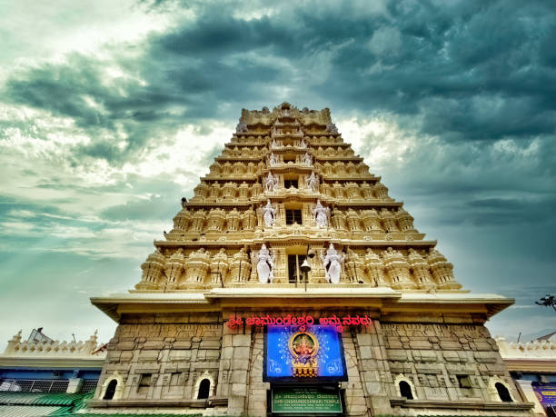
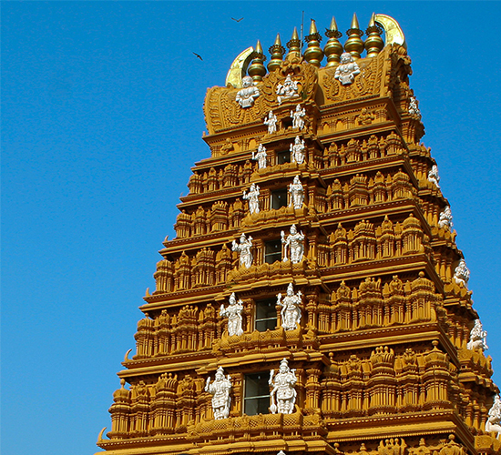

Dakshinesware Kali Temple


Dakshinesware Kali Temple
Dakshineswar Kali Temple or Dakshineswar Kalibari is a Hindu navaratna style temple in Dakshineswar, Kolkata, West Bengal, India, on the eastern bank of the Hooghly River. The presiding deity of the temple is Bhavatarini (Kali), a form of Mahadevi or Parashakti Adya Kali, otherwise known as Adishakti Kalika.[1] The temple was built in 1855 by Rani Rashmoni, a zamindar (feudal lord), and a devotee of Kali. The temple is associated with avatar Sri Ramakrishna and Sarada Devi, his wife and devotee mystic, both of 19th century Bengal.
The main temple was inspired by Radhakanta temple in Tollygunge, built by Babu Ramnath Mondal of the Bawali Raj family.[4][5][6][7] The temple compound, apart from the nine-spired main temple, contains a large courtyard surrounding the temple, with rooms along the boundary walls. Along the riverfront, there are twelve shrines dedicated to Shiva, Kali's consort, a temple to Radha–Krishna, a bathing ghat at the river, and a shrine dedicated to Rani Rashmoni. The 'Nahabat', or "music tower," northeast and beyond the last of the Shiva temples, is where Maa Sarada spent a considerable part of her life.[2][8] Sri Ramakrishna's room is in the northwest corner of the courtyard, with a semicircular verandah facing the river.
History
The Dakshineswar Kali Temple was founded around the middle of the 19th century by Mahishya zamindar Rani Rashmoni.[10][11][12] She was well known for her philanthropic activities. In the year 1847, Rashmoni prepared to go upon a long pilgrimage to the sacred Hindu city of Kashi (known also as Varanasi or Benares) to express her devotions to the Divine Mother. Rani was to travel in twenty-four boats, carrying relatives, servants, and supplies.[8] According to traditional accounts, the night before the pilgrimage began, Rashmoni had a vision of the Divine Mother goddess Kali in a dream, who said,
There is no need to go to Banaras. Install my statue in a beautiful temple on the banks of the Ganges river and arrange for my worship there. Then I shall manifest myself in the image and accept worship at that place.
Profoundly affected by the dream, Rani immediately looked for and purchased a 12,000-hectare (30,000-acre) plot in the village of Dakshineswar. The large temple complex was built between 1847 and 1855. The 8.1-hectare (20-acre) plot was bought from an Englishman, Jake Hastie, and was then popularly known as Saheban Bagicha.[14] Built partly on ground shaped like a tortoise and thus considered befitting for the worship of Shakti according to Tantra traditions, it took eight years and nine hundred thousand rupees to complete the construction.
The image of Goddess Kali was installed on the Snana Yatra day on 31 May 1855, amid grand festivities. The temple was known then as Sri Sri Jagadishwari Mahakali,[15] with Ramkumar Chhattopadhyay as the head priest. His younger brother Gadadhar (later known as Ramakrishna) and his nephew Hriday moved in to assist him.
[1][2][3][8][16] On 31 May 1855, more than 1 lakh (one hundred thousand) Brahmins were invited from different parts of the country to grace the auspicious occasion. The next year, 1856, Ramkumar died, and the position of head priest was given to Ramakrishna. His wife, Sarada Devi, stayed in the south side of the Nahabat (music tower), in a small room on the ground floor which is now a shrine dedicated to her.
Rani Rashmoni lived for only five years and nine months after the inauguration of the temple. She fell seriously ill in 1861. Realizing that her death was near, she decided to hand over the property she had purchased in Dinajpur (now in Bangladesh) as a legacy for the maintenance of the temple to the temple trust. She accomplished her task on 18 February 1861 and died on the next day.
Due to his inspirational devotion to the Divine Mother as Goddess Kali, realized God-consciousness and practical teachings for laypersons, Ramakrishna was responsible for bringing much in the way of both fame and pilgrims to the temple.[18] From 1902-1932, lay disciple Mahendranath Gupta published the Sri Sri Ramakrishna Kathamrita, known in English as The Gospel of Sri Ramakrishna. It contains practical teachings given by Sri Ramakrishna over a four year period to his lay devotees and disciples, including moments with Naredranath Dutta, later world-famous as Swami Vivekananda.
Architecture
Built in the navaratna or nine spires style of Bengal architecture, the three-storeyed south-facing temple has nine spires distributed in the upper two storeys, and stands on a high platform with a flight of stairs, overall it measures 14 metres (46 ft) square and rises over 30 metres (100 ft) high.
The garbha griha (or sanctum sanctorum) houses an image of goddess Kali, known as Bhavatarini, standing on the chest of a supine Shiva, with both figures placed on a thousand-petaled lotus throne made of silver.
West of the main temple and between the entrance to the ghat on the Hooghly river lies the row of twelve identical Shiva temples, built facing the east in the typical aat-chala Bengal architecture. To the northeast of the temple complex is the Vishnu/Radha Kanta Temple. A flight of steps lead up to a columned verandah and into the temple. There, a silver throne holds the 21+1⁄2-inch (550 mm) image of Lord Krishna and a 16-inch (410 mm) image of Radha.